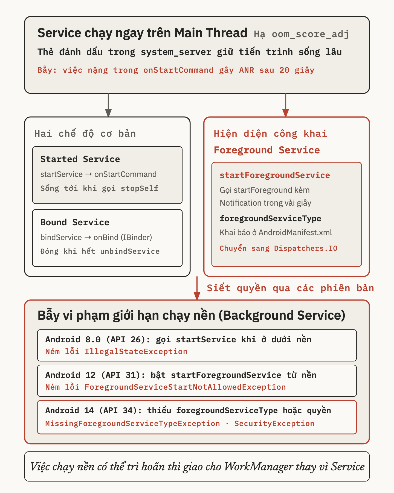

Service
Bản 30 giây
Khi bạn khóa màn hình hay chuyển sang ứng dụng khác mà vẫn muốn nhạc phát tiếp, Activity đã bị ẩn đi. Service là thành phần không giao diện giúp ứng dụng giữ việc chạy tiếp và báo hệ điều hành đừng vội tắt tiến trình. Để chống hao pin ngầm, Android hiện nay buộc Service chạy lâu phải treo thông báo cho người dùng thấy.
Cần biết trước
Vấn đề buộc nó ra đời
Ở các bản Android đầu tiên năm 2008, khi người dùng thoát màn hình, tiến trình rất dễ bị bộ dọn bộ nhớ tắt mất. Lập trình viên cần một thành phần báo cho hệ thống biết ứng dụng vẫn đang phát nhạc hoặc tải tệp.
Nhưng suốt nhiều năm sau đó, hàng chục ứng dụng mạng xã hội và quảng cáo lạm dụng Service để chạy ngầm suốt ngày đêm. Máy điện thoại bị cạn RAM và tụt pin nhanh dù người dùng không hề mở các ứng dụng đó.
Từ Android 8.0 (API 26), hệ thống tự dừng Background Service sau vài phút khi ứng dụng xuống nền. Rồi Android 12 (API 31) cấm luôn việc tự bật Foreground Service từ dưới nền. Sang Android 14 (API 34), mọi Foreground Service bắt buộc phải khai báo rõ mục đích chạy qua foregroundServiceType.
Nó thực sự là cái gì
Service không phải là một luồng chạy ngầm tách biệt như Thread hay coroutine. Thực chất, nó chạy ngay trên Main Thread của tiến trình ứng dụng. Nó chỉ là một thẻ đánh dấu trong system_server để hạ điểm ưu tiên bị tắt (oom_score_adj). Nếu bạn chạy vòng lặp nặng trực tiếp trong Service, màn hình ứng dụng vẫn bị đơ và nổ lỗi ANR.
Cơ chế

Một Started Service khởi chạy qua startService, đi vào onCreate rồi onStartCommand và sống tới khi tự gọi stopSelf. Một Bound Service cho phép các thành phần khác kết nối qua bindService và nhận đối tượng IBinder trong onBind để gọi hàm qua lại. Với Foreground Service, khi gọi startForegroundService, bạn phải gọi tiếp startForeground kèm thông báo (Notification) trong vòng vài giây và khai báo foregroundServiceType. Tất cả các hàm vòng đời này đều chạy trên Main Thread trừ khi bạn tự mở coroutine hoặc luồng phụ bên trong.
Đánh đổi
Dùng Foreground Service giúp tiến trình được hệ điều hành bảo vệ để không bị tắt giữa chừng khi đang phát nhạc hay dẫn đường. Đổi lại, màn hình khóa của người dùng luôn hiện một thanh thông báo cố định và máy tốn thêm RAM lẫn pin. Các việc chạy nền có thể trì hoãn được thì nên giao cho WorkManager thay vì tự giữ Service.
Nguyên lý gốc
Tách vòng đời công việc khỏi vòng đời màn hình. Mọi công việc chiếm tài nguyên dài hạn bắt buộc phải hiện diện công khai trước người dùng.
Key insight
Servicekhông tạo luồng phụ, mà chỉ là giấy phép báo hệ điều hành giữ tiến trình sống lâu hơn khi vắng mặt giao diện.
Khuôn mẫu chuẩn
class AudioPlayService : Service() {
override fun onStartCommand(intent: Intent?, flags: Int, startId: Int): Int {
ServiceCompat.startForeground(
this, 101, buildPlayerNotification(),
ServiceInfo.FOREGROUND_SERVICE_TYPE_MEDIA_PLAYBACK
)
startAudioOnBackgroundCoroutine()
return START_NOT_STICKY
}
override fun onBind(intent: Intent?): IBinder? = null
}
Bẫy & ranh giới
Đọc tệp lớn hay giải mã âm thanh ngay trong onStartCommand sẽ khóa chặt Main Thread và gây lỗi ANR sau 20 giây ở tiền cảnh. Trên Android 8.0 trở lên, gọi startService khi ứng dụng đang ở dưới nền sẽ làm sập ứng dụng ngay với IllegalStateException. Từ Android 12, bật startForegroundService từ nền ngoài diện ngoại lệ sẽ ném ForegroundServiceStartNotAllowedException, còn quên gọi startForeground đúng hạn cũng làm sập tiến trình. Trên Android 14, thiếu khai báo foregroundServiceType hoặc quyền tương ứng trong AndroidManifest.xml sẽ gây lỗi MissingForegroundServiceTypeException và SecurityException.
Câu hỏi thực chiến
Hỏi: Viết lệnh tải file nặng bên trong hàm onStartCommand của Service thì giao diện Activity có bị giật không?
Có. Toàn bộ các hàm của Service mặc định đều chạy chung trên Main Thread với Activity. Nếu bạn không tự chuyển việc tải tệp sang luồng phụ hoặc Dispatchers.IO, màn hình sẽ đứng im và báo lỗi ANR.
Hỏi: Gọi startForegroundService xong mà quên gọi startForeground bên trong Service thì sao?
Hệ thống chỉ cho phép Service vài giây sau khi khởi động để gắn thanh thông báo lên màn hình qua hàm startForeground. Quá hạn đó mà chưa có thông báo, Android sẽ dừng Service ngay lập tức và làm ứng dụng sập.
Hỏi: Khi nào nên dùng Bound Service thay cho Started Service?
Bạn dùng Bound Service khi màn hình đang mở cần gọi hàm liên tục và lấy dữ liệu trực tiếp từ Service. Ví dụ thanh tua nhạc cần hỏi liên tục vị trí bài hát đang phát. Khi mọi màn hình đều ngắt kết nối (unbindService), Bound Service tự đóng, trừ khi nó cũng được mở bằng startService.
Ý bắt buộc khi giải thích lại
- Giải thích được vì sao Service không phải là luồng riêng mà chạy ngay trên Main Thread để giữ điểm oom_score_adj thấp.
- Phân biệt được Started Service, Bound Service (qua onBind và IBinder) và Foreground Service kèm thông báo bắt buộc.
- Nêu được các lỗi sập khi vi phạm giới hạn nền: IllegalStateException (Android 8.0), ForegroundServiceStartNotAllowedException (Android 12) và MissingForegroundServiceTypeException (Android 14).
- Viết lại được khuôn mẫu chuẩn từ trí nhớ.
Nguồn
- Services overview — Android Developers
- Service API reference — Android Developers
- Background Execution Limits in Android 8.0
- Foreground service types are required — Android 14